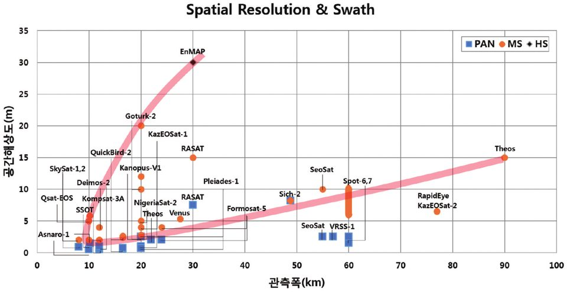

연구실적 · 국내전문학술지
효율적인 농림업 위성관측을 위한 탑재체 기술사양 분석
Analysis of Payload Technical Specifications for Efficient Agriculture and Forestry Satellite Observation

초록
위성은 지난 반세기 동안 활동영역을 넓혀왔고, 향후에 추가 발사될 것으로 전망됨에 따라 위성 탑재체 개발에 대한 연구는 활발히 증가될 것으로 예측된다. 특히 지구관측 위성은 사용 목적과 수요에 따라 다양한 분야에서 활용되고 있으며 각 활용분야에 따른 적합한 탑재체 제원이 필요하다. 한반도의 경우 국토 의 85%가 산림 및 농경지로 분포되어 있어 농림업 분야에서의 활용이 가장 활발할 것으로 예측할 수 있다. 본 논문에서는 향후 농림업분야에서 국내 지형을 효율적으로 관측하기 위한 위성 탑재체 기술을 분석하였다. 이를 위해 국내 사용자들이 농림업분야에 위성영상을 활용한 사례를 조사하여 관측 탑재체의 기술특성 에 대해 분석하였다. 또한 국내외에서 농림업분야에 활용되고 있는 지구관측 위성 탑재체의 개발 현황과 향 후 국내 지형을 효율적으로 관측하기 위한 기술사양을 분석하였다. 이를 바탕으로 관측폭 조정과 탑재체 관측 운용 형태에 따른 위성 모의 운용실험을 수행하였다. 본 연구 내용은 향후 농림업 위성이 개발에 앞서 기술적 참고 자료로 활용될 수 있을 것으로 기대된다.
인용
김범승, 이경도, 홍석영, 이우경, “효율적인 농림업 위성관측을 위한 탑재체 기술사양 분석”, 대한원격탐사학회지, 제32권 3호, 2016년 6월
BibTeX
@article{Kim_2016,
title={Analysis of Payload Technical Specifications for Efficient Agriculture and Forestry Satellite Observation},
volume={32},
ISSN={1225-6161},
url={http://dx.doi.org/10.7780/kjrs.2016.32.3.8},
DOI={10.7780/kjrs.2016.32.3.8},
number={3},
journal={Korean Journal of Remote Sensing},
publisher={The Korean Society of Remote Sensing},
author={Kim, Bum-Seung and Lee, Kyung-Do and Hong, Suk-Young and Lee, Woo-Kyung},
year={2016},
month=June,
pages={287–305}
}